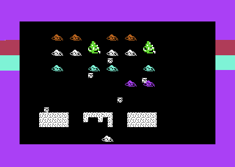

<meta charset="utf-8">
<meta name="viewport" content="width=device-width, initial-scale=1">
<title>{{title}}</title>
<link rel="preconnect" href="https://fonts.googleapis.com">
<link rel="stylesheet" href="https://fonts.googleapis.com/css2?family=Lato:wght@400;700;900&family=IBM+Plex+Mono:wght@400;500&display=swap">
<style>
:root{
  --bg:#23262d; --paper:#e9e7e1; --surface:#ffffff; --surface-2:#f1efea; --line:#d5d3cc; --line-soft:#e0ded8;
  --ink:#2f3136; --ink-soft:#55585f; --ink-mute:#80838a;
  --link:#1f5fa8; --link-hover:#154480; --accent:#1f5fa8;
  --amber:#c25a00; --cyan:#1f5fa8; --coral:#d04a3a; --green:#2a8a4a; --violet:#4a5bd6; --hl:#fff0c2;
  --chip:#2f3136; --chip-ink:#ffffff;
  --c64blue:#40318d; --c64grey:#686868;
  --fd:'Lato',system-ui,sans-serif; --fb:'Lato',system-ui,sans-serif; --fm:'IBM Plex Mono',ui-monospace,Menlo,monospace;
  --col:1080px; --gx:68px; --fs:17px; --lh:1.6; --hw:900; --h1:46px; --h2:26px; --sy:48px; --pp:26px; --r:10px;
  --plate-shadow:0 1px 2px rgba(0,0,0,.05),0 4px 14px rgba(0,0,0,.05);
}
*{box-sizing:border-box}
html{background:var(--bg);min-height:100%}
body{background:var(--paper);color:var(--ink);font-family:var(--fb);font-size:var(--fs);line-height:var(--lh);max-width:var(--col);margin:0 auto;min-height:100vh;padding:0 0 4rem}
h1,h2,h3{font-weight:var(--hw);letter-spacing:-.01em;text-wrap:balance;color:var(--ink);margin:0}
.wrap{padding:0 var(--gx)}
.hero{padding:48px var(--gx) 8px;text-align:left}
.eyebrow{font-family:var(--fm);font-size:12px;letter-spacing:.08em;text-transform:uppercase;color:var(--ink-mute);margin:0 0 10px}
.hero h1{font-size:var(--h1);line-height:1.15;letter-spacing:-.02em;margin:0 0 14px}
.hero .sub{margin:0 0 .6em;color:var(--ink-soft)}
section{padding:var(--sy) 0 24px}
section:last-of-type{border-bottom:none}
.fig{font-family:var(--fm);font-size:12px;letter-spacing:.08em;text-transform:uppercase;color:var(--ink-mute);margin:0 0 10px}
h2.t{font-size:var(--h2);margin-bottom:12px}
.lede{color:var(--ink-soft);margin:0 0 30px}
.plate{background:var(--surface);border:1px solid var(--line);border-radius:var(--r);padding:var(--pp);box-shadow:var(--plate-shadow)}
.cap{font-size:14px;color:var(--ink-mute);margin-top:14px;line-height:1.55}
.cap b{color:var(--ink);font-weight:700}
.reference{display:block;max-width:100%;height:auto;image-rendering:pixelated}
code{font-family:var(--fm);font-size:.82em;background:var(--chip);color:var(--chip-ink);border-radius:4px;padding:2px 6px;white-space:nowrap}

</style>
<!-- tabs -->
<header class="hero"><p class="eyebrow">Commodore 64 · Ocean</p><h1>Platoon</h1><p class="sub">Ocean turned Oliver Stone’s Vietnam War film into a succession of different challenges, from searching the jungle to defending a position through the night. Its makers had room to invent, and reviewers disagreed about how much of the film survived the transformation.</p></header>
<main class="wrap">

<section id="jungle"><p class="fig">01 · The game</p><h2 class="t">Through the jungle</h2>
<p>You lead five American soldiers, controlling one man at a time. The opening jungle demands exploration under fire: find explosives, destroy a bridge to stop a patrol, and search the village for the equipment that opens the way underground.</p>
<div class="plate"><p class="cap">The jungle’s paths run through layers of vegetation. Below them, the panel records the selected soldier’s ammunition and wounds alongside the platoon’s morale.</p></div>
<p>Finding your way matters as much as shooting. Paths connect through gaps in the vegetation, and huts contain ordinary household objects as well as useful supplies. Some searches reveal booby traps. Destroying the bridge solves one problem but leaves a gap you can fall into.</p>
<p id="men">The five soldiers give you separate stores of ammunition and separate wounds to manage. A man with four wounds is lost; medical supplies can heal an injury before that happens. Hits also reduce morale, so the damage reaches beyond the man on screen.</p>
</section>

<section id="tunnels"><p class="fig">02 · Beyond the jungle</p><h2 class="t">Underground and through the night</h2>
<p>Entering the tunnels changes the view and the controls. You look through the soldier’s eyes, stepping along passages and turning at junctions. A small map helps you navigate, while a movable gunsight replaces the jungle’s sideways shooting.</p>
<p>The tunnels make exploration dangerous at close quarters. Attackers appear along the passages, and rooms hold boxes to search for supplies. Finding flares and a compass allows you to continue to the dugout.</p>
<p id="dugout">There, movement gives way to a night watch. Enemies rise out of the darkness, and firing a flare briefly lights the ground around them. You must hold the position until dawn.</p>
<p id="maze">The last jungle is another maze, this time against a two-minute clock. Mines and a sniper threaten the approach to Sergeant Barnes’s bunker. Barnes, an American sergeant from the film, becomes the game’s final opponent.</p>
<p><a href="levels.html">Explore the jungle, tunnels, and route to Barnes on the Maps page.</a></p>
</section>

<section id="makers"><p class="fig">03 · The people</p><h2 class="t">The people behind Platoon</h2>
<p>The C64 title screen credits <b>Zach Townsend</b> with programming, <b>Andrew Sleigh and Martin McDonald</b> with graphics, and <b>Jonathan Dunn</b> with music and sound effects.</p>
<p>Later accounts describe the design work behind those credits. In Andrew Fisher’s history for <i>Film Stories</i>, Ocean artist <b>Simon Butler</b> attended a private screening and developed storyboards from the film. Ocean software director <b>Gary Bracey</b> and fellow artist <b>Mark R. Jones</b> contributed ideas. Butler then oversaw the C64 development. Jones suggested the tunnel attacker who emerges from the water, drawing on his memories of the ZX81 game <i>3D Monster Maze</i>. <a href="about.html#src-2">Andrew Fisher, <i>Film Stories</i>.</a></p>
<p>Townsend remembered Platoon particularly clearly because its gameplay could be created from scratch. An arcade conversion already supplied a game to reproduce; this film licence left more freedom over what each section would contain. That freedom came with tight deadlines. In his recollection for <i>Time Extension</i>, Townsend described rushed projects and some envy of freelancers who could work at their own pace. <a href="about.html#src-3">Zach Townsend’s recollections.</a></p>
<p>For Dunn, Platoon carried a different pressure. He had taken over after Ocean musician Martin Galway left, and recalled that “a lot was expected”. Young and in his first job, Dunn later named Platoon among his career highlights. He also explained that composing at Ocean meant entering music as data statements for its development system. <a href="about.html#src-4">Jonathan Dunn interviewed by SIDwave, <i>Recollection</i> #3.</a></p>
<p><a href="music.html">Nine tunes from the game can be heard on the Music page.</a></p>
</section>

<section id="reception"><p class="fig">04 · Release and reception</p><h2 class="t">A film licence with something to answer for</h2>
<p>Platoon’s packaging brought part of the film soundtrack into the box. The original release included an audio cassette of Smokey Robinson and the Miracles’ <i>The Tracks of My Tears</i>, along with a cast poster and a film still. <a href="about.html#src-2">Release history, <i>Film Stories</i>.</a></p>
<div class="plate"><p class="cap">The loading picture recreates the film’s image of a soldier with raised arms. The screen also advertises the film’s availability on video.</p></div>
<p>Reviewers considered whether the game captured the film’s atmosphere. In its February 1988 review, <i>Zzap!64</i> awarded the C64 version 94%. Steve Jarratt singled out the tension of the tunnels and bunker, arguing that the game made him feel he was “fighting for your life, rather than for the glory of it”. <a href="about.html#src-5"><i>Zzap!64</i> #34, pages 88–89.</a></p>
<p>Andy Wilton’s April review in <i>ACE</i> drew a different distinction. He recognised the depth added by managing five men and the sense of a story progressing, but thought the film’s moral problems disappeared once the action began. Treating Vietnamese soldiers as interchangeable shooting targets troubled him. His review also reported C64 gameplay faults, including firing problems at clearing edges and accidental shots at villagers when changing men. <a href="about.html#src-6"><i>ACE</i> #7, page 59.</a></p>
<p>Those judgments concern two different achievements. Platoon could make its reviewers feel vulnerable in the jungle while leaving them divided about what its violence meant.</p>
</section>

<section id="discoveries"><p class="fig">05 · Inside the game</p><h2 class="t">What the finished game leaves behind</h2>
<p>Townsend’s name survives inside the controls as well as in the credits. In the opening section, holding <b>Z, A, C, H, and 1</b> together disables the check that lets enemies and their bullets hit your soldier. The protection has limits: traps and the destroyed bridge remain dangerous.</p>
<p>A larger surprise sits inside the final section: a small game of <i>Space Invaders</i>, with marching enemies, falling bombs, and destructible shields. It can run, but Platoon’s normal play does not start it.</p>
<div class="plate"><p class="cap">The unused game, started directly during examination of Platoon. Some invaders are missing from this captured display; its restart loops into another round.</p></div>
<p><a href="discoveries.html#invaders">The Discoveries page explains the cheat and shows what survives of the unused game.</a></p>
</section>

</main>
<footer style="margin:16px 0 0;padding:22px var(--gx) 0;border-top:1px solid #e0ded8;font-family:'IBM Plex Mono',ui-monospace,Menlo,monospace;font-size:12px;color:#80838a"><a href="https://github.com/gamesexplained/gamesexplained" aria-label="GitHub" style="display:inline-flex;align-items:center;justify-content:center;width:26px;height:26px;margin-left:8px;border:1px solid #e0ded8;border-radius:7px;background:#ffffff;color:#80838a;vertical-align:middle"><svg width="15" height="15" viewBox="0 0 24 24" fill="currentColor" aria-hidden="true"><path d="M12 .297c-6.63 0-12 5.373-12 12 0 5.303 3.438 9.8 8.205 11.385.6.113.82-.258.82-.577 0-.285-.01-1.04-.015-2.04-3.338.724-4.042-1.61-4.042-1.61C4.422 18.07 3.633 17.7 3.633 17.7c-1.087-.744.084-.729.084-.729 1.205.084 1.838 1.236 1.838 1.236 1.07 1.835 2.809 1.305 3.495.998.108-.776.417-1.305.76-1.605-2.665-.3-5.466-1.332-5.466-5.93 0-1.31.465-2.38 1.235-3.22-.135-.303-.54-1.523.105-3.176 0 0 1.005-.322 3.3 1.23.96-.267 1.98-.399 3-.405 1.02.006 2.04.138 3 .405 2.28-1.552 3.285-1.23 3.285-1.23.645 1.653.24 2.873.12 3.176.765.84 1.23 1.91 1.23 3.22 0 4.61-2.805 5.625-5.475 5.92.42.36.81 1.096.81 2.22 0 1.606-.015 2.896-.015 3.286 0 .315.21.69.825.57C20.565 22.092 24 17.592 24 12.297c0-6.627-5.373-12-12-12"/></svg></a><a href="https://discord.gg/3V9GWyRDWV" aria-label="Discord" style="display:inline-flex;align-items:center;justify-content:center;width:26px;height:26px;margin-left:8px;border:1px solid #e0ded8;border-radius:7px;background:#ffffff;color:#80838a;vertical-align:middle"><svg width="15" height="15" viewBox="0 0 24 24" fill="currentColor" aria-hidden="true"><path d="M20.317 4.3698a19.7913 19.7913 0 00-4.8851-1.5152.0741.0741 0 00-.0785.0371c-.211.3753-.4447.8648-.6083 1.2495-1.8447-.2762-3.68-.2762-5.4868 0-.1636-.3933-.4058-.8742-.6177-1.2495a.077.077 0 00-.0785-.037 19.7363 19.7363 0 00-4.8852 1.515.0699.0699 0 00-.0321.0277C.5334 9.0458-.319 13.5799.0992 18.0578a.0824.0824 0 00.0312.0561c2.0528 1.5076 4.0413 2.4228 5.9929 3.0294a.0777.0777 0 00.0842-.0276c.4616-.6304.8731-1.2952 1.226-1.9942a.076.076 0 00-.0416-.1057c-.6528-.2476-1.2743-.5495-1.8722-.8923a.077.077 0 01-.0076-.1277c.1258-.0943.2517-.1923.3718-.2914a.0743.0743 0 01.0776-.0105c3.9278 1.7933 8.18 1.7933 12.0614 0a.0739.0739 0 01.0785.0095c.1202.099.246.1981.3728.2924a.077.077 0 01-.0066.1276 12.2986 12.2986 0 01-1.873.8914.0766.0766 0 00-.0407.1067c.3604.698.7719 1.3628 1.225 1.9932a.076.076 0 00.0842.0286c1.961-.6067 3.9495-1.5219 6.0023-3.0294a.077.077 0 00.0313-.0552c.5004-5.177-.8382-9.6739-3.5485-13.6604a.061.061 0 00-.0312-.0286zM8.02 15.3312c-1.1825 0-2.1569-1.0857-2.1569-2.419 0-1.3332.9555-2.4189 2.157-2.4189 1.2108 0 2.1757 1.0952 2.1568 2.419 0 1.3332-.9555 2.4189-2.1569 2.4189zm7.9748 0c-1.1825 0-2.1569-1.0857-2.1569-2.419 0-1.3332.9554-2.4189 2.1569-2.4189 1.2108 0 2.1757 1.0952 2.1568 2.419 0 1.3332-.946 2.4189-2.1568 2.4189Z"/></svg></a><br>© Games Explained contributors. Write-ups, facts and symbol maps are available under <a href="https://creativecommons.org/licenses/by-sa/4.0/" style="color:#1f5fa8;text-decoration:none">CC BY-SA 4.0</a>; code under <a href="https://opensource.org/licenses/MIT" style="color:#1f5fa8;text-decoration:none">MIT</a></footer>
